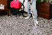

2026年
問題152 繊維床材の特徴と維持管理に関する次の記述のうち，最も適当なものはどれか．
(1)事務所建築物の繊維床材のしみは，約60%が疎水性である．
(2)ウールの含水率は0.5%程度なので，親水性の汚れはしみになりにくい．
(3)合成繊維カーペットの洗浄には，多量の液を噴霧するエクストラクタが使える．
(4)長尺の繊維床材は，モルタルで床に張り付けている．
(5)ポリプロピレンに付着した親水性の汚れは，ナイロンより取りにくい．
2026年
問題152 正解（3） 頻出度AAA
噴射吸引式機械（エクストラクタ2026-152-1図）は，操作杖（ウォンド）の先端にあるノズルから洗剤液を噴射して，ただちに吸引口（スリット）から吸引する構造になっており，これをカーペット上で操作することによって洗浄が行われる．シャンプークリーニングが洗剤の泡で洗浄するのに対して，この機械は洗剤液そのものでパイルを洗浄する．多量の液を噴射するので水分に耐える合成繊維カーペットに適する機械である．この機械は，シャンプークリーニング後のパイルに残留した洗剤分を，清水又は温水ですすぎ洗いをする場合に使用されることも多い．
2026-52-1図 エクストラクタによるカーペット洗浄

出典 ダイキンマルエス
https://duskin-maruesu.com/house/carpet/ を基に作成
-(1) 事務所建築物の繊維床材では，60％以上が親水性の染みである．
-(2) ，-(5) カーペットパイルの素材については，152-1表参照．
2026-152-1表 カーペットパイルの素材
| 種類 | 染色性 | 耐久性 | 汚れ除去性 | 含水率 | 色素の沈着 | |
| 天然繊維 | ウール | 最上 | 大 | 親水性の汚れは取りにくい | 15 | 大 |
| 合成繊維 | ナイロン | 中 | 大 | 中間的な性質を示す | 5 | 中 |
| アクリル | 上 | 小 | 親水性の汚れは取れやすい | 0 | 無 （構造上） |
|
| ポリエステル | 上 | 中 | 親水性の汚れは比較的取れやすい | 0.5 | 無 （構造上） |
|
| ポリプロピレン | 下 | 復元力が乏しい | 親水性の汚れは取れやすい | 0 | 無 （成分上） |
|
カーペットのパイルとはカーペットの表面にある毛足のこと．パイルには大きくわけて，ループパイル（毛先が輪になっている）とカットパイル（毛先が切り揃えてある）がある（2026-152-2図参照）．
2026-152-2図 パイル
-(4) 繊維床材の貼り付けに用いるのは専用の接着剤（アクリル樹脂系やラテックス系などの床用接着剤）である．